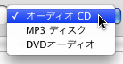
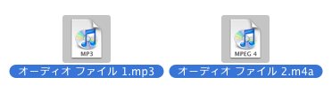
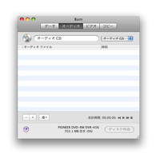
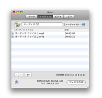
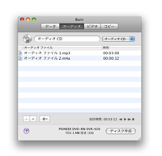
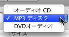
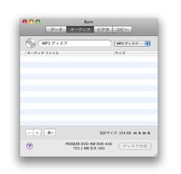
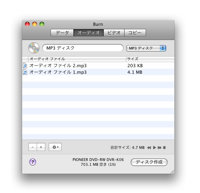
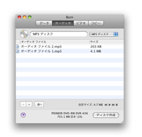
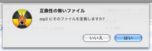

オーディオディスクの作成:
Burnは最も一般的なオーディオCDとMP3ディスクも作成できます。ほとんどの、新しいデバイスはMP3ディスクを演奏
できます。 オーディオCDはCDの上に作成さ
れるだけです。MP3ディススクはどんなディスクにも作成できます。またBurnはまだそれほど一般的でないDVDオーディオディスクを作成することがで
きます。家電用のDVDプレーヤーでこれらのディスクを再生することができるものもあります。これらのディスクは高品質なオーディオを含めることができま
す。これらのディスクのために直接サポートされているファイルフォーマットはwavとflacファイルです。
オーディオCDを作成するには:
1 オーディオCDを選択します
ポップアップボタンから「オーディオCD」を選択します。

2 オーディオファイルを幾つか選択します
QuickRime互換のファイルをいくつか選択します(ビデオファイルでもかまいませんがオーディオのみが使われます)。
注意: 保護されたオーディオファイルはサポートされません。

3 それらをリストにドロップします:
選択したファイルをリストにドロップすると、Burnは使用可能かどうか検査します。
 

4 ディスク作成ボタンをクリックします
ダイアログが表示されます。

5 オプションを選択します
ディスク作成時のオプションを選択します。更に多くの設定についてはBurnのメインメニュー「環境設定」を見てください。

6 ディスク作成
ディスクを作成する為に「ディスク作成」ボタンをクリックします。

7 Burn
はディスクを作成します
ディスク作成中にBurnは作成中の状態についてのダイアログを表示します。

MP3とDVDオーディオディスクを作成するには:
1 「MP3ディスク」または「DVDオーディオ」を選択します
ポップアップボタンから「MP3ディスク」または「DVDオーディオ」を選択します。

2 オーディオファイルを幾つか選択します
幾つかのオーディオとビデオファイルとを選択します。大部分のフォーマットがサポートされています。
注意: 保護されたオーディオファイルはサポートされません。
3 それらをリストにドロップします:
選択したファイルをリストにドロップします。ファイルが正しい形式ならば追加されます。もし正しくなければBurnはそれらを変換するかどうかを尋ねま
す。
 


4 ディスク作成ボタンをクリックします
ダイアログが表示されます。
5 オプションを選択します
ディスク作成時のオプションを選択します。更に多くの設定についてはBurnのメインメニュー「環境設定」を見てください。
6 ディスク作成
ディスクを作成する為に「ディスク作成」ボタンをクリックします。
7 Burn
はディスクを作成します
ディスク作成中にBurnは作成中の状態についてのダイアログを表示します。